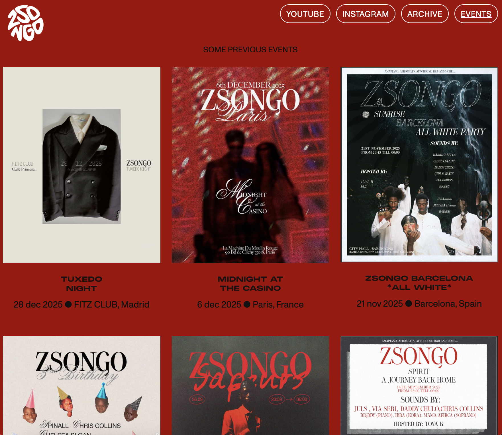

Bringing Zsongo to life on the web, blending visuals and functionality.
Though rooted in Madrid, Zsongo hosts events around the globe and is all about celebrating diversity, culture, and human connection. The goal was to create a site that feels as dynamic and alive as the world it represents. Every element was designed to reflect its essence, making the digital space an extension of Zsongo's creative spirit.

- Designed and built the website in Webflow, translating Zsongo’s visual identity into a responsive web
- Defined the visual structure, typography, spacing and composition to create a site that feels dynamic, expressive, and aligned with the culture-driven events.
- Integrated animated and visuals to add energy and movement.
- Optimised layouts and assets for desktop and mobile to ensure consistency and usability across screen sizes.
- From concept to launch within 5 weeks - combining aesthetics, functionality, and technical constraints.
